极氪7X开到3万公里，保养、充电、保险一共花了多少钱
引子
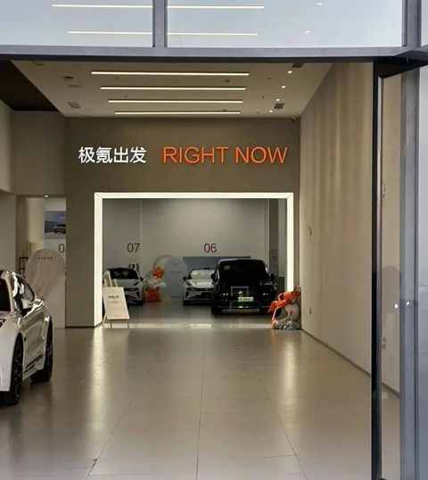
一晃，距离提车已经17个月，目前已行驶超过3w公里。
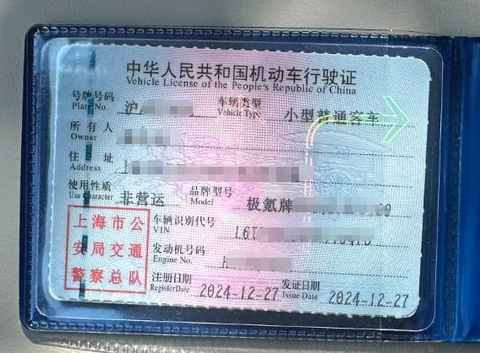
辅助驾驶的主要使用场景为高速，日常城区道路不使用。
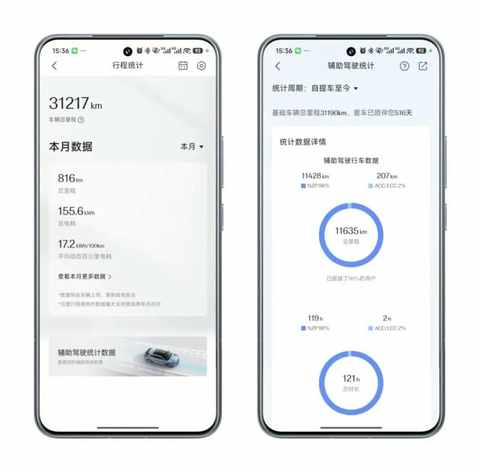
车辆的版本是：长续航四驱智驾版，选的白色外观和白色内饰。
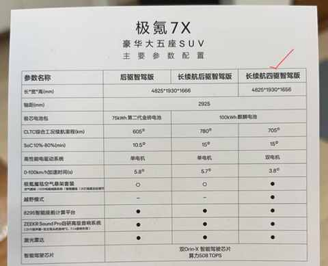
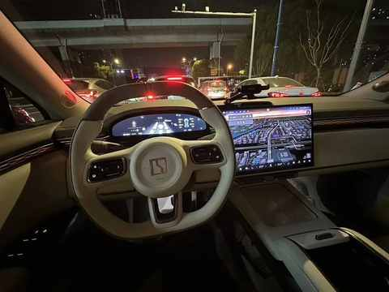
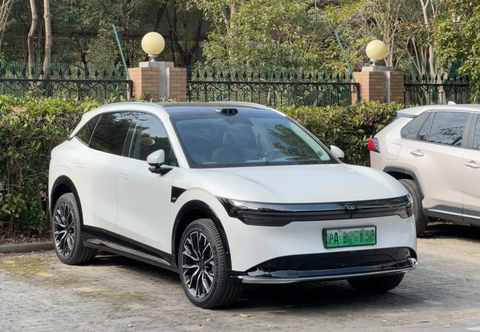
只有一个选配：后排沙发。

最近几天，仔细把用车成本核算出来了， 我的主要使用场景是三个：接娃上下学、节假日长途出行、偶尔自驾。
这篇不谈感受，直接算账 ，以便给大家做一个真实的参考。
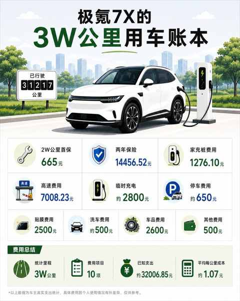
3万公里的用车账本
整理账单其实挺费功夫的，主要是考虑到一辆车的用车成本肯定不只是其能耗表现， 要把充电、保险、保养、停车、高速、车品一起算才更贴近实际情况。
纯电车省不省钱，不能靠感觉，必须仔仔细细的算账，总计17个月的用车费用我分成了7个大的模块：
充电费用： 12.74%
1）家充桩费用：1276.1元，占比3.99%
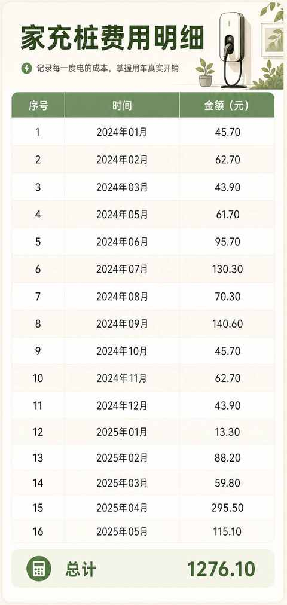
2）临时充电费用：约2800元，占比8.75%
主要是在高速上充电，国家电网的充电桩用得最多。
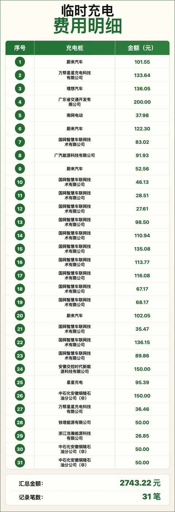
PS： 汇总金额计为2800元是因为有几笔充电记录没找到
最终充电费用为：4076.1元，再结合当下的行驶里程为：31217公里。
简单计算便能得出能耗：
约等于每公里 0.13元，也就是1毛3/公里。
保险费用：45.17%
两年的保险费用：14456.52元。
占整体用车费用的比例为45.17%，是所有费用里面占比最高的一项。
第一年：8361.89元 （赠补漆券，未出险）
第二年：6094.63元（有赠送900元购物卡+补漆券）
保养费用：2.08%
目前只做了一次保养，首保的费用：665元，是目前整体费用中占比最低的一项。
费用组成为两项：
1）基础保养费用为：517元
2）空调管路清洗服务：148元
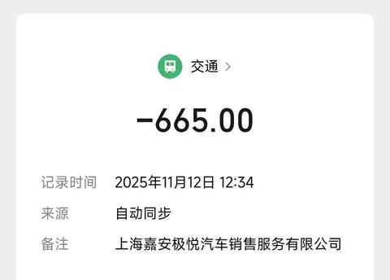
当时有做动力电池健康度检测，最终结果是：99.73%。
当时去的上海嘉定的极氪家，整体环境不错，服务流程规范，中午有盒饭提供。
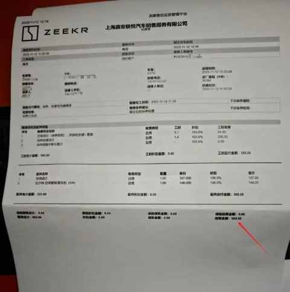
极氪的保养不便宜，二保是4W公里或两年，可能需要1000元左右
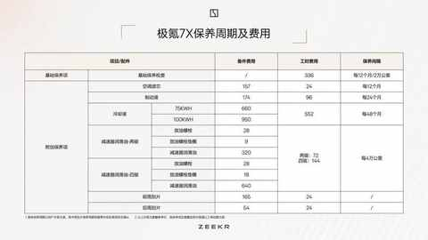
高速和停车费用：23.93%
1）高速费用：7008.23元
占比21.9%，仅次于保险费用占比。
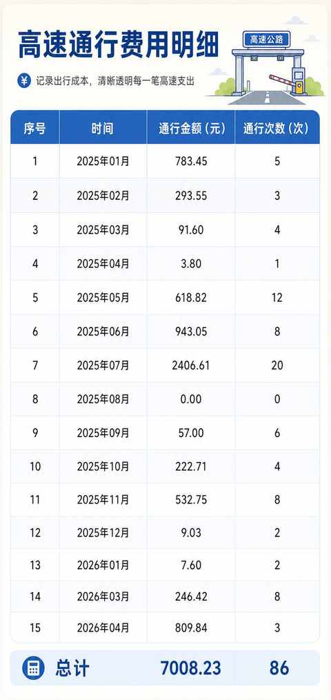
2）停车费用：约650元
占比2.03%， 这一项无需过多解释，开车出行停车费是避免不了的。
车品费用：8.12%
总计花费约2600元，都是一些必备的车载用品。
1）NFC钥匙，在闲鱼买的
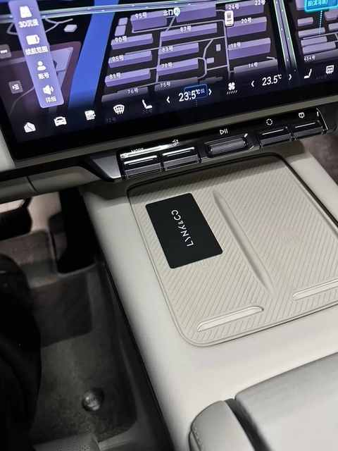
2）全包围脚垫，提车当天去安装的

3） ETC，跑高速必备
这款大小适中，能放在扶手箱里面，半年充电一次即可

4）小米充放电一体枪
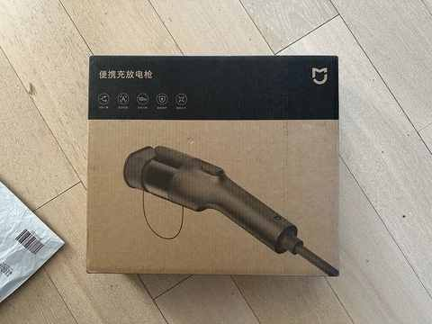
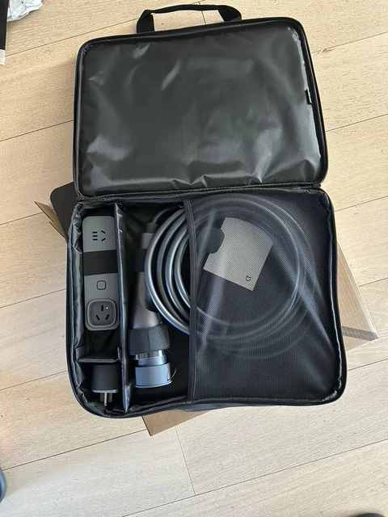
5）各种小配件
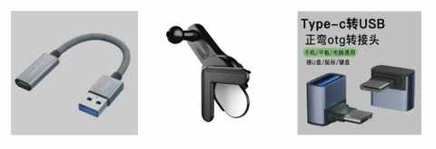
贴膜费用：2500元
没有贴车衣，只贴了隔热膜，最终选的是3M透光度好一点的膜，具体型号已经忘记，只记得贴膜后三天不能升降车窗。
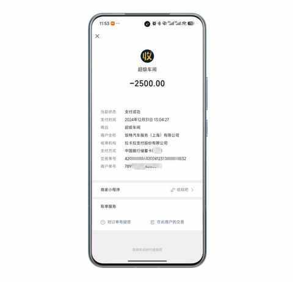
洗车及其他费用：3.12%
大约一个月洗车1-2次，前期主要去店里面洗，但每次去几乎都需要排队等候。
现在都是去自助洗车的地方清洗，不仅更实惠了，而且大部分时候也不用等，到了就洗，每次根据清洗的时长和用量，单次费用范围在10-20元。
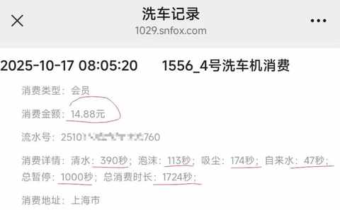
自己洗车虽然比较费功夫，而且前期因为不太熟练也清洗的没有洗车店干净，但洗完之后的成就感满满！
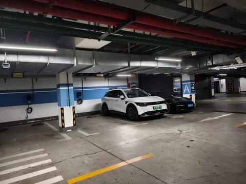
结语
相信通过以上相对明细的账单，你能得出一个结论：纯电车不一定在所有项目上都便宜，特别是高速场景偏多的时候。
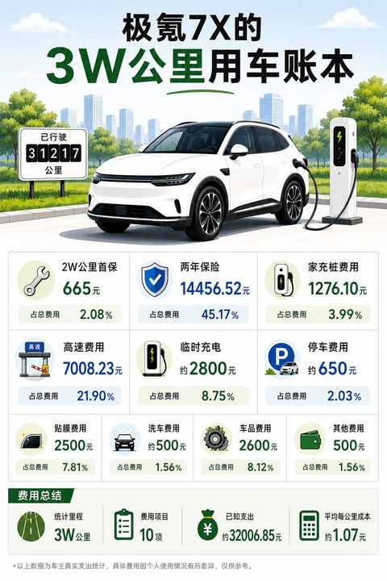
但如果有稳定充电条件、日常通勤距离比较长、用车频繁的话，整体的综合使用成本和体验都会更有优势。